Last updated: 2026-08-21
Checks: 7 0
Knit directory:
single-cell-jamboree/analysis/
This reproducible R Markdown analysis was created with workflowr (version 1.7.2). The Checks tab describes the reproducibility checks that were applied when the results were created. The Past versions tab lists the development history.
Great! Since the R Markdown file has been committed to the Git repository, you know the exact version of the code that produced these results.
Great job! The global environment was empty. Objects defined in the global environment can affect the analysis in your R Markdown file in unknown ways. For reproduciblity it’s best to always run the code in an empty environment.
The command set.seed(1) was run prior to running the
code in the R Markdown file. Setting a seed ensures that any results
that rely on randomness, e.g. subsampling or permutations, are
reproducible.
Great job! Recording the operating system, R version, and package versions is critical for reproducibility.
Nice! There were no cached chunks for this analysis, so you can be confident that you successfully produced the results during this run.
Great job! Using relative paths to the files within your workflowr project makes it easier to run your code on other machines.
Great! You are using Git for version control. Tracking code development and connecting the code version to the results is critical for reproducibility.
The results in this page were generated with repository version 71a0c81. See the Past versions tab to see a history of the changes made to the R Markdown and HTML files.
Note that you need to be careful to ensure that all relevant files for
the analysis have been committed to Git prior to generating the results
(you can use wflow_publish or
wflow_git_commit). workflowr only checks the R Markdown
file, but you know if there are other scripts or data files that it
depends on. Below is the status of the Git repository when the results
were generated:
Ignored files:
Ignored: .Rhistory
Ignored: .Rproj.user/
Ignored: analysis/.RData
Untracked files:
Untracked: analysis/Rplot.pdf
Untracked: analysis/fit_pancreas_celseq2_gbcd.Rout
Untracked: analysis/fit_pancreas_celseq2_snmf_k100.R
Untracked: analysis/fit_pancreas_celseq2_snmf_k40.R
Untracked: analysis/fit_pancreas_celseq2_snmf_k40.Rout
Untracked: analysis/pancreas_celseq2_snmf_k100.RData
Untracked: analysis/pancreas_celseq2_snmf_ms.Rmd
Untracked: output/pancreas_celseq2_snmf_k100.RData
Untracked: output/pancreas_celseq2_snmf_k40.RData
Unstaged changes:
Modified: single-cell-jamboree.Rproj
Note that any generated files, e.g. HTML, png, CSS, etc., are not included in this status report because it is ok for generated content to have uncommitted changes.
These are the previous versions of the repository in which changes were
made to the R Markdown (analysis/pancreas_celseq2_ica.Rmd)
and HTML (docs/pancreas_celseq2_ica.html) files. If you’ve
configured a remote Git repository (see ?wflow_git_remote),
click on the hyperlinks in the table below to view the files as they
were in that past version.
| File | Version | Author | Date | Message |
|---|---|---|---|---|
| Rmd | 71a0c81 | Matthew Stephens | 2026-08-21 | workflowr::wflow_publish("pancreas_celseq2_ica.Rmd") |
library(fastICA)
library("Matrix")I wanted to try fastICA on the pancreas data. I also experiment with a “warm start” using gradient steps that minimize log cosh, because the minima of log-cosh tend to correspond to sparse binary (0,1) groups rather than sign (-1,1) groups that can combine clusters.
#fits ica to the pancreas celseq2 data (and 2 random subsets)
load("../data/pancreas.RData")
set.seed(1)
# Select the CEL-seq2 data (Muraro et al, 2016).
# This should select 2,285 cells.
i <- which(sample_info$tech == "celseq2")
sample_info <- sample_info[i,]
counts <- counts[i,]
# Remove genes that are expressed in fewer than 10 cells.
x <- colSums(counts > 0)
j <- which(x > 9)
counts <- counts[,j]
# Compute the shifted log counts.
a <- 1
s <- rowSums(counts)
s <- s/mean(s)
Y <- MatrixExtra::mapSparse(counts/(a*s),log1p)
#randomly divide rows of Y into 2
subset = sample(1:nrow(Y), nrow(Y)/2)Helper functions:
# matrix version of r1 fastica
# U is (n.comp+1) x n (whitened data plus intercept).
# W is (n.comp+1) x n_starts (one weight vector per column).
# P = t(U) %*% W is n x n_starts (source estimates).
fastica_update = function(U, W) {
P <- t(U) %*% W # n x n_starts: source estimates
G <- tanh(P)
G2 <- 1 - G^2
W <- U %*% G - sweep(W, 2, colSums(G2), "*")
# Add epsilon (1e-15) to prevent 0/0
sweep(W, 2, sqrt(colSums(W^2)) + 1e-15, "/")
}
# X is n x p; returns whitened data (centers columns of X, whiten to n.comp dimensions)
# returned U is n.comp x n
preprocess = function(X, n.comp = 10) {
X <- scale(X, scale = FALSE)
sqrt(nrow(X)) * t(svd(X)$u[, 1:n.comp])
}
gradient_minica_update = function(U, W, lr = 0.1) {
# n_samples = ncol(U); n_features = nrow(U); n_starts = ncol(W)
P <- t(U) %*% W # n_samples x n_starts: source estimates
G <- tanh(P) # First derivative of log-cosh
# Calculate the gradient
# We divide by ncol(U) to average over samples, keeping the learning rate
# stable regardless of your dataset size.
grad <- (U %*% G) / ncol(U)
# Gradient descent step (minimize log-cosh)
# Note: To MAXIMIZE log-cosh (standard for super-Gaussian sources), use + instead of -
W <- W - lr * grad
# Normalize to project back to the unit sphere (norm = 1)
# Add epsilon (1e-15) to prevent 0/0
sweep(W, 2, sqrt(colSums(W^2)) + 1e-15, "/")
}
# this is the projected version; i have not tested since the unprojected version seems to work fine
gradient_minica_update_projected = function(U, W, lr = 0.1) {
# 1. Compute the Euclidean gradient
P <- t(U) %*% W
G <- tanh(P)
grad <- (U %*% G) / ncol(U)
# 2. Project gradient onto the tangent space of the sphere
# Calculate the dot product (w^T g) for each column
w_T_grad <- colSums(W * grad)
# Subtract the radial component: g_proj = g - (w^T g) * w
proj_grad <- grad - sweep(W, 2, w_T_grad, "*")
# 3. Take the gradient step using the projected gradient
W <- W - lr * proj_grad
# 4. Retract back to the unit sphere
sweep(W, 2, sqrt(colSums(W^2)) + 1e-15, "/")
}
# A greedy function to prune correlated columns of a matrix; written by Gemini
# Install if necessary: install.packages("caret")
library(caret)Loading required package: ggplot2Warning: package 'ggplot2' was built under R version 4.4.3Loading required package: latticeWarning: package 'lattice' was built under R version 4.4.3fast_prune_caret <- function(L, tau = 0.8) {
# Compute correlation matrix once
cor_mat <- abs(cor(L))
# findCorrelation returns the indices to REMOVE
# Setting exact = FALSE uses a faster heuristic for large matrices
drop_indices <- findCorrelation(cor_mat, cutoff = tau, exact = FALSE)
# Handle the case where no rows exceed the threshold
if (length(drop_indices) > 0) {
kept_indices <- setdiff(1:ncol(L), drop_indices)
pruned_matrix <- L[,-drop_indices,drop = FALSE]
} else {
kept_indices <- 1:ncol(L)
pruned_matrix <- L
}
list(pruned_matrix = pruned_matrix, kept_indices = kept_indices)
}
prune_and_count_cluster <- function(L, tau = 0.9) {
# 1. Convert correlation to distance (1 - absolute correlation)
dist_mat <- as.dist(1 - abs(cor(L)))
# 2. Hierarchical clustering
# 'complete' linkage ensures no two rows in a cluster are further apart than the threshold
hc <- hclust(dist_mat, method = "complete")
# 3. Cut the dendrogram to form clusters (distance of 1 - tau corresponds to correlation of tau)
clusters <- cutree(hc, h = 1 - tau)
# 4. Select a representative from each cluster
# match() quickly grabs the first index of each unique cluster ID
kept_indices <- match(unique(clusters), clusters)
# 5. Map the sizes to the exact order of kept_indices
# Extract the cluster ID for each kept row, then use it to index the table
cluster_sizes_table = table(clusters)
kept_cluster_ids <- clusters[kept_indices]
cluster_sizes <- as.integer(cluster_sizes_table[as.character(kept_cluster_ids)])
list(
pruned_matrix = L[,kept_indices , drop = FALSE],
cluster_sizes = cluster_sizes,
kept_indices = kept_indices,
cluster_assignments = clusters
)
}First plot the eigenvalues of Y to get some idea how many components to whiten to:
Y.svd= svd(Y)
plot(Y.svd$d[2:1000])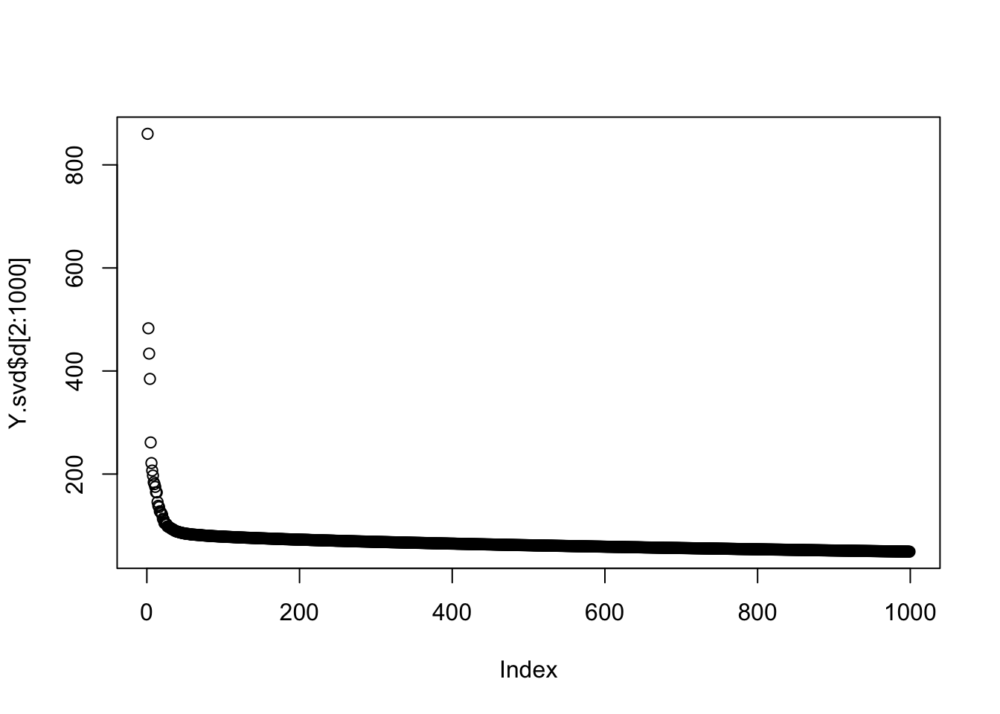
plot(Y.svd$d[2:200])
abline(v=30)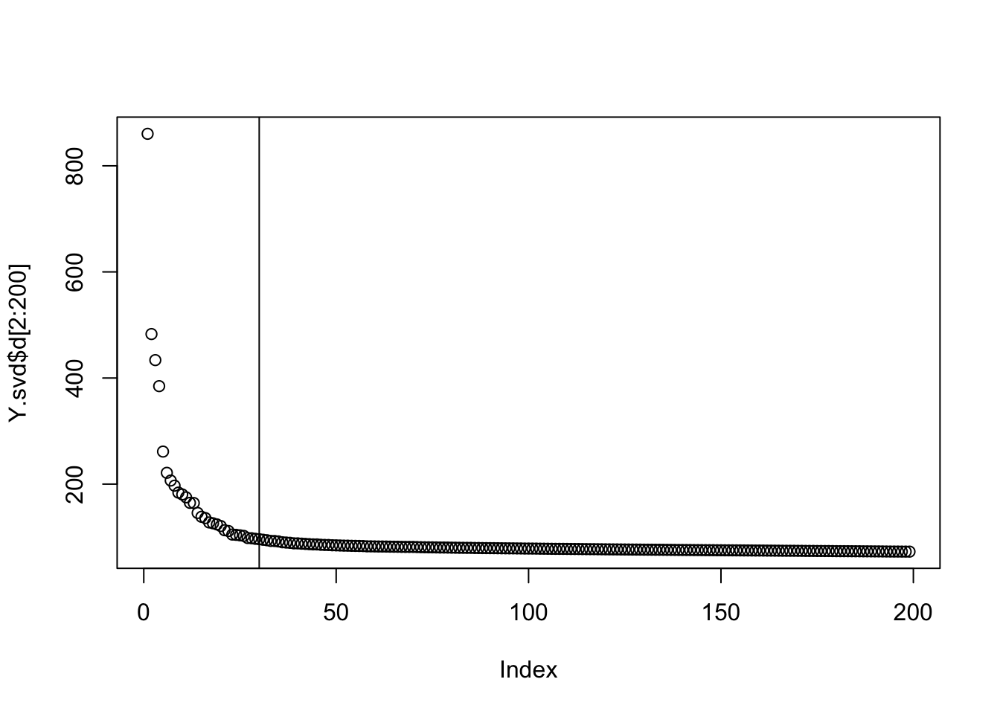
Whiten data:
n.comp = 25 # I found using slightly fewer that 30 PCs produced maybe better results
U <- preprocess(Y, n.comp = n.comp)
U_aug <- rbind(rep(1, ncol(U)), U)I run fastICA (rank 1) from 1000 random normal starts and then cluster the results (using hierarchical clustering). The plot shows the number of starts that gave each result and the objective value obtained, with panels ordered by increasing objective value.
n_starts = 1000
n_iter = 50 #you can get away with fewer
set.seed(1)
W <- matrix(rnorm(nrow(U_aug) * n_starts), nrow(U_aug), n_starts)
W <- sweep(W, 2, sqrt(colSums(W^2)), "/")
for (i in seq_len(n_iter))
W <- fastica_update(U_aug, W)
Lhat <- t(U_aug) %*% W # n x n_starts
Lhat.pc = prune_and_count_cluster(Lhat)
Lhat.prune = Lhat.pc$pruned_matrix
o = order(sample_info$celltype)
plot_Lhat = function(Lhat.pc){
Lhat.prune = Lhat.pc$pruned_matrix
o = order(sample_info$celltype)
obj = colMeans(log(cosh(Lhat.prune)))
o2 = order(obj)
par(mfcol=c(4,5),mai=rep(0.2,4))
for(i in o2){
plot(Lhat.prune[o,i],col=sample_info$celltype[o], main = paste0("num:",Lhat.pc$cluster_sizes[i],"; obj:",round(obj[i],3)))
abline(h=0)
}
}
table(sample_info$celltype)
acinar activated_stellate alpha beta
274 90 843 445
delta ductal endothelial epsilon
203 258 21 4
gamma macrophage mast quiescent_stellate
110 15 6 12
schwann t_cell
4 0 plot_Lhat(Lhat.pc)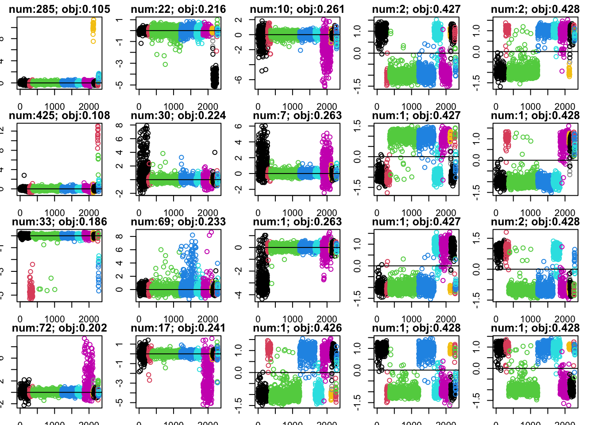
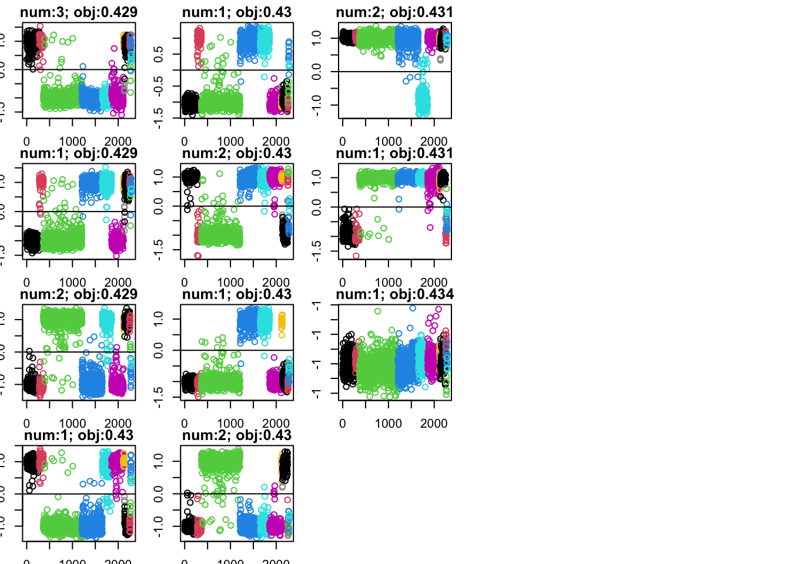
Here I try initializing from binary starts with various fractions. Mostly this seems to just increase the number of times converging to the intercept.
set.seed(1)
n <- ncol(U_aug)
p = c(0.99,0.95,0.9,0.85,0.8,0.7,0.6,0.5)
X <- c()
for(i in 1:length(p)){
X <- cbind(X,matrix(sample(c(0,1),n * n_starts/length(p),replace=TRUE, prob = c(p[i],1-p[i])), n, n_starts/length(p)))
}
W <- U_aug %*% X
W <- sweep(W, 2, sqrt(colSums(W^2)), "/")
for (i in seq_len(n_iter))
W <- fastica_update(U_aug, W)
Lhat_b <- t(U_aug) %*% W # n x n_starts
Lhat_b.pc = prune_and_count_cluster(Lhat_b)
plot_Lhat(Lhat_b.pc)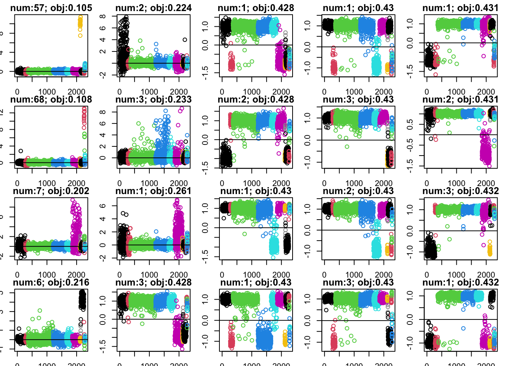
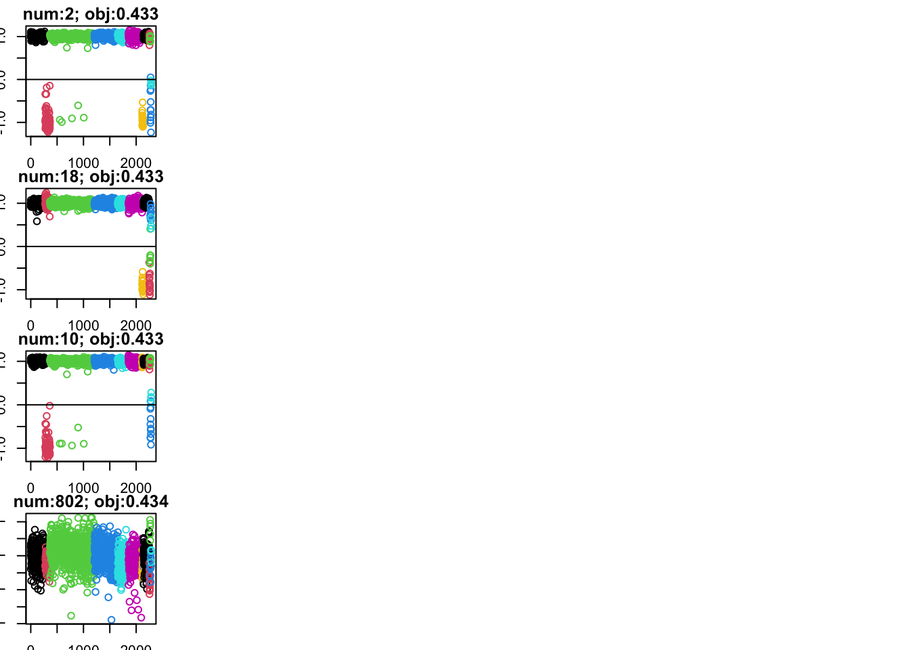
Here I make a binary (0/1) matrix with one column for each cell type, and initialize the ica from that, using the warm start to minimize (which actually does not make much difference in this case; not shown).
X_bin = model.matrix(~ sample_info$celltype - 1)
W <- U_aug %*% X_bin
W <- sweep(W, 2, sqrt(colSums(W^2)), "/")
for (i in seq_len(n_iter))
W <- gradient_minica_update(U_aug, W)
for (i in seq_len(n_iter))
W <- fastica_update(U_aug, W)
par(mfcol=c(4,4),mai=rep(0.2,4))
Lhat_ct <- t(U_aug) %*% W # n x n_starts
obj_ct = colMeans(log(cosh(Lhat_ct)))
for(i in 1:13){
plot(Lhat_ct[o,i],col=sample_info$celltype[o], main = paste0("ct:",i,"; obj:",round(obj_ct[i],3)))
}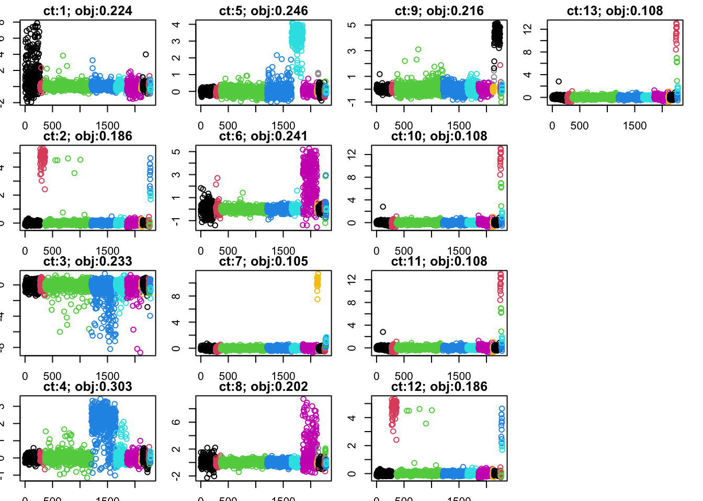
Here I make a sign (-1/1) matrix with one column for each cell type, and initialize the ica from that:
X_sign = 2*X_bin-1
W <- U_aug %*% X_sign
W <- sweep(W, 2, sqrt(colSums(W^2)), "/")
for (i in seq_len(n_iter))
W <- fastica_update(U_aug, W)
par(mfcol=c(4,4),mai=rep(0.2,4))
Lhat_ct <- t(U_aug) %*% W # n x n_starts
obj_ct = colMeans(log(cosh(Lhat_ct)))
for(i in 1:13){
plot(Lhat_ct[o,i],col=sample_info$celltype[o], main = paste0("ct:",i,"; obj:",round(obj_ct[i],3)))
}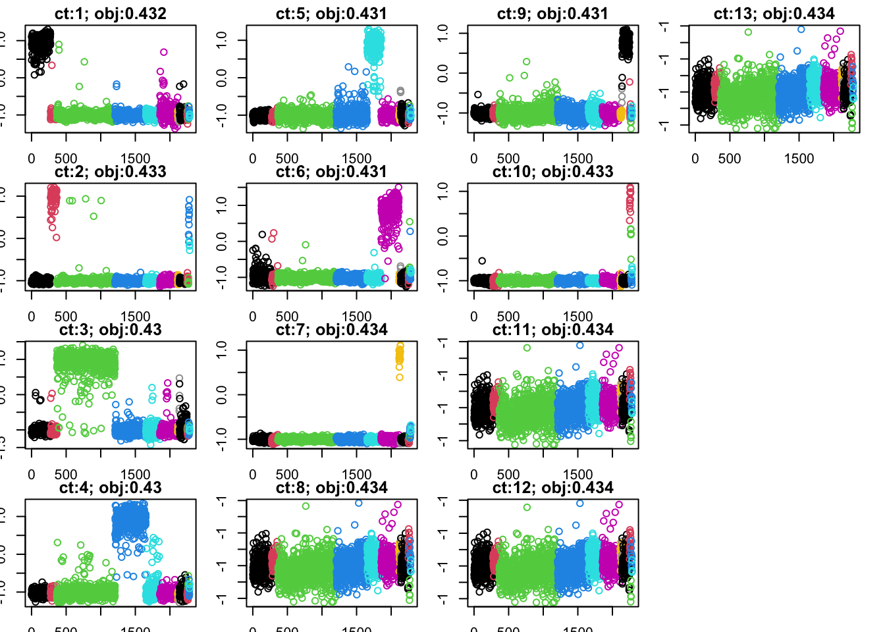
Many of the original solutions split about -1,1, and are close to a maximum of log cosh (around 0.43). From simulation results we know that some of these may be combining groups. I want to try initializing at the 0,a version of these solutions, again using warmstart to minimize.
X = (sign(Lhat.prune)+1)/2
W = U_aug %*% cbind(X,1-X)
W <- sweep(W, 2, sqrt(colSums(W^2))+1e-15, "/")
for (i in seq_len(n_iter))
W <- gradient_minica_update(U_aug, W)
for (i in seq_len(n_iter))
W <- fastica_update(U_aug, W)
Lhat2 <- t(U_aug) %*% W # n x n_starts
obj2 = colMeans(log(cosh(Lhat2)))
sub = obj2<0.43
Lhat2 = Lhat2[,sub]
obj2 = obj2[sub]
par(mfcol=c(4,4),mai=rep(0.2,4))
for(i in 1:ncol(Lhat2)){
plot(Lhat2[o,i],col=sample_info$celltype[o], main = paste0("bin start:",i,"; obj:",round(obj2[i],3)))
abline(h=0)
}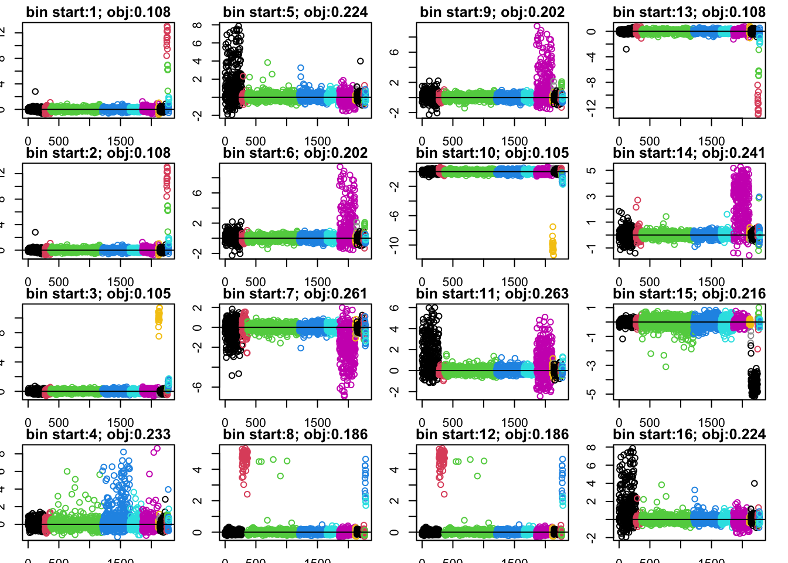
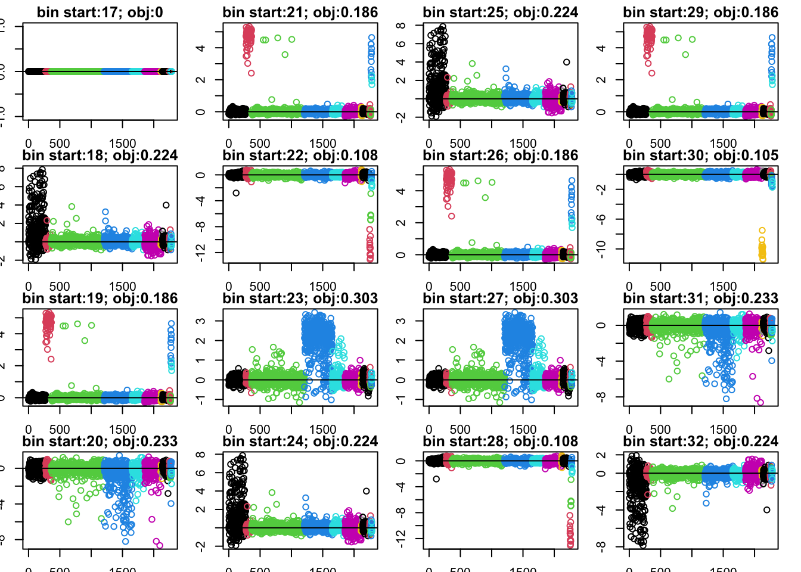
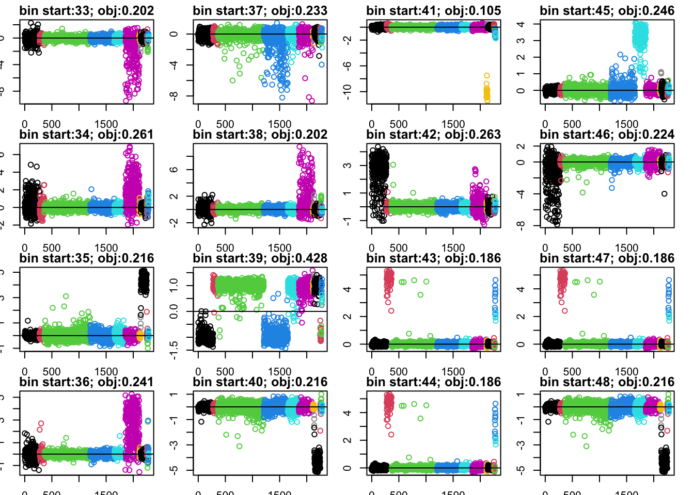
Here I try use the gradient update to minimize log cosh. Run fastICA (rank 1) from 25 random normal starts. It finds about 5 different solutions, all look something like minima. (Running it 1000 times found about 11 different local minima, but the “best” ones are all in the 25 random starting points.)
n_starts = 1000
n_iter = 50 #you can get away with fewer
set.seed(1)
W <- matrix(rnorm(nrow(U_aug) * n_starts), nrow(U_aug), n_starts)
W <- sweep(W, 2, sqrt(colSums(W^2)), "/")
for (i in seq_len(n_iter))
W <- gradient_minica_update(U_aug, W)
for (i in seq_len(n_iter))
W <- fastica_update(U_aug, W)
Lhat <- t(U_aug) %*% W # n x n_starts
Lhat.pc = prune_and_count_cluster(Lhat)
Lhat.prune = Lhat.pc$pruned_matrix
plot_Lhat(Lhat.pc)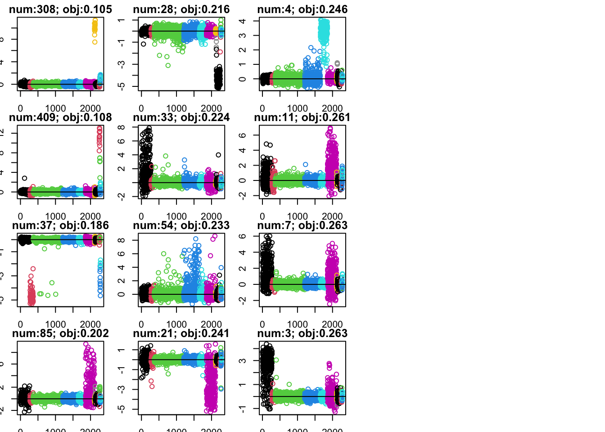
This was old code, running it to cluster genes and looking how consistent the programs are from the two runs. While there is some consistency, there do not seem to be as many consistent programs as with semi-nmf (eg not as many with abs correlation >0.5). Note that, unlike with semi-nmf, the programs will not necessarily have a consistent sign.
#fit.ica.k40 = fastICA(t(Y), n.comp=40)
#fit.ica.k40.1 = fastICA(t(Y[subset,]), n.comp = 40)
#fit.ica.k40.2 = fastICA(t(Y[-subset,]), n.comp = 40)
#session_info <- sessionInfo()
#save(list = c("fit.snmf.k40","fit.snmf.k40.1","fit.snmf.k40.2","session_info"),
# file = "../output/pancreas_celseq2_snmf_k40.RData")
# cormat <- cor(fit.ica.k40.1$S,fit.ica.k40.2$S)
# apply(abs(cormat),1, max)
# hist(cormat,nclass=100)
# image(abs(cormat)>0.5)
# assignment_problem <- RcppHungarian::HungarianSolver(-1*abs(cormat))
# pairings <- assignment_problem$pairs
# image(abs(cormat)[pairings[,1], pairings[,2]])
sessionInfo()R version 4.4.2 (2024-10-31)
Platform: aarch64-apple-darwin20
Running under: macOS 26.5.2
Matrix products: default
BLAS: /System/Library/Frameworks/Accelerate.framework/Versions/A/Frameworks/vecLib.framework/Versions/A/libBLAS.dylib
LAPACK: /Library/Frameworks/R.framework/Versions/4.4-arm64/Resources/lib/libRlapack.dylib; LAPACK version 3.12.0
locale:
[1] en_US.UTF-8/en_US.UTF-8/en_US.UTF-8/C/en_US.UTF-8/en_US.UTF-8
time zone: America/Chicago
tzcode source: internal
attached base packages:
[1] stats graphics grDevices utils datasets methods base
other attached packages:
[1] caret_7.0-1 lattice_0.22-9 ggplot2_4.0.2 Matrix_1.7-4 fastICA_1.2-7
loaded via a namespace (and not attached):
[1] tidyselect_1.2.1 timeDate_4052.112 dplyr_1.2.0
[4] farver_2.1.2 S7_0.2.1 fastmap_1.2.0
[7] pROC_1.19.0.1 promises_1.5.0 digest_0.6.39
[10] rpart_4.1.24 timechange_0.4.0 lifecycle_1.0.5
[13] survival_3.8-6 MatrixExtra_0.1.15 magrittr_2.0.4
[16] compiler_4.4.2 rlang_1.1.7 sass_0.4.10
[19] tools_4.4.2 yaml_2.3.12 data.table_1.18.2.1
[22] knitr_1.51 plyr_1.8.9 RColorBrewer_1.1-3
[25] workflowr_1.7.2 withr_3.0.2 purrr_1.2.1
[28] stats4_4.4.2 nnet_7.3-20 grid_4.4.2
[31] git2r_0.36.2 future_1.69.0 globals_0.19.0
[34] scales_1.4.0 iterators_1.0.14 MASS_7.3-65
[37] cli_3.6.5 rmarkdown_2.30 generics_0.1.4
[40] otel_0.2.0 rstudioapi_0.18.0 future.apply_1.20.2
[43] reshape2_1.4.5 cachem_1.1.0 stringr_1.6.0
[46] splines_4.4.2 parallel_4.4.2 vctrs_0.7.2
[49] hardhat_1.4.2 jsonlite_2.0.0 listenv_0.10.0
[52] foreach_1.5.2 gower_1.0.2 jquerylib_0.1.4
[55] recipes_1.3.1 glue_1.8.0 parallelly_1.46.1
[58] codetools_0.2-20 lubridate_1.9.5 stringi_1.8.7
[61] gtable_0.3.6 later_1.4.6 tibble_3.3.1
[64] pillar_1.11.1 htmltools_0.5.9 ipred_0.9-15
[67] float_0.3-3 lava_1.8.2 R6_2.6.1
[70] rprojroot_2.1.1 evaluate_1.0.5 RhpcBLASctl_0.23-42
[73] httpuv_1.6.16 bslib_0.10.0 class_7.3-23
[76] Rcpp_1.1.1 nlme_3.1-168 prodlim_2026.03.11
[79] whisker_0.4.1 xfun_0.56 ModelMetrics_1.2.2.2
[82] fs_1.6.6 pkgconfig_2.0.3